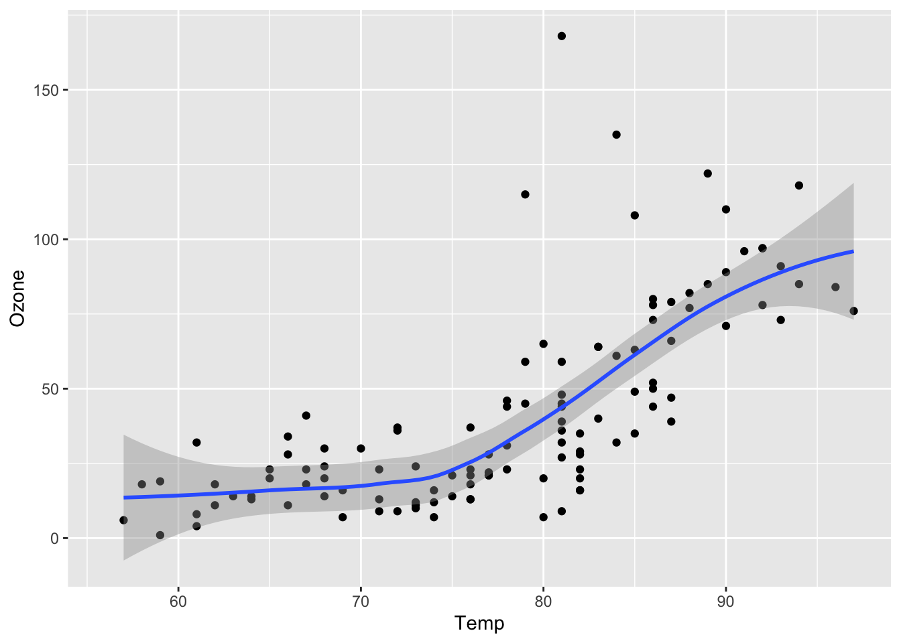

Code
library(pacman)
p_load(downlit)
devtools::install_github("rethinkpriorities/rp-r-package")
library(rethinkpriorities)
devtools::install_github("rethinkpriorities/r-noodling-package")
library(rnoodling)You need to reload packages (and data) in every chapter, unlike in our previous Bookdown setups.
library(pacman)
p_load(downlit)
devtools::install_github("rethinkpriorities/rp-r-package")
library(rethinkpriorities)
devtools::install_github("rethinkpriorities/r-noodling-package")
library(rnoodling)Figure 2.1 further explores the impact of temperature on ozone level.
library(pacman)
p_load(ggplot2)
library(ggplot2)
ggplot(airquality, aes(Temp, Ozone)) +
geom_point() +
geom_smooth(method = "loess"
)
Is the object from the previous chapter still there?
xtestError in eval(expr, envir, enclos): object 'xtest' not foundI'm a bug -- will it halt??Error: <text>:1:2: unexpected INCOMPLETE_STRING
1: I'm a bug -- will it halt??
^